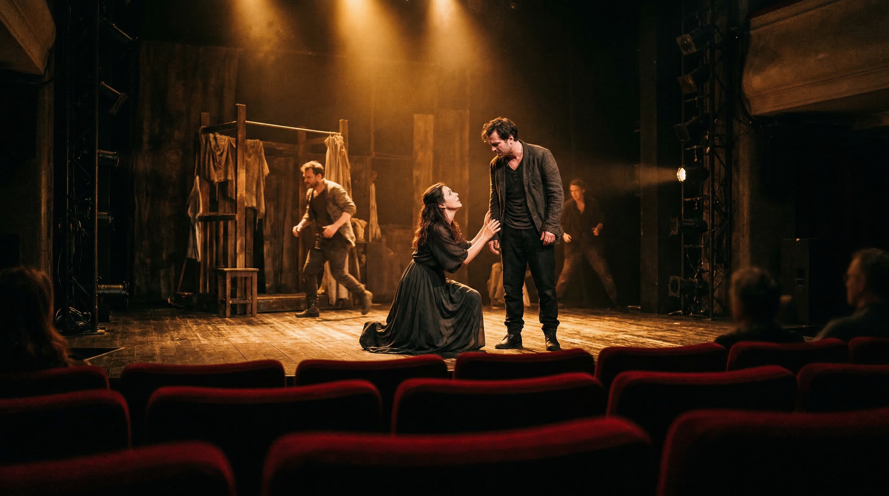
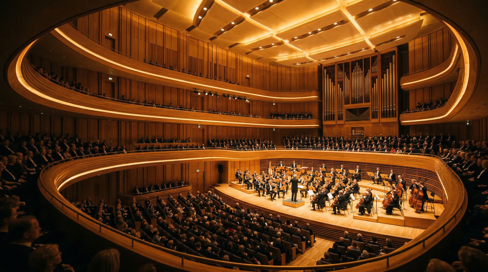
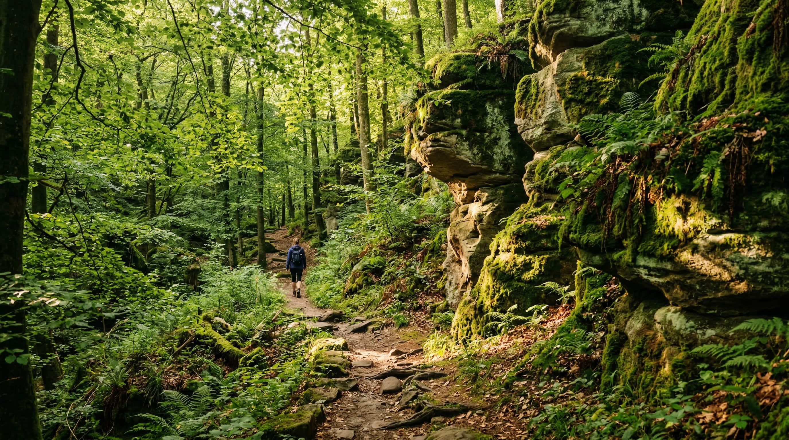
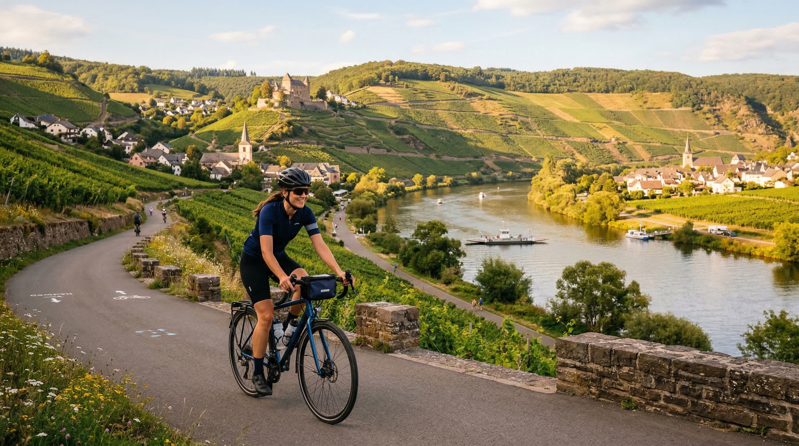

Les meilleures tables de Luxembourg-Ville et ses environs — de la haute gastronomie aux bistrots de terroirThe finest tables in Luxembourg City and beyond — from Michelin-starred dining to authentic terroir bistros
Dans un cadre intimiste où une poignée de convives seulement s'installent face aux cuisines ouvertes, Clovis Degrave – élu Chef de l'Année 2026 par Gault&Millau – orchestre une expérience sensorielle …
In an intimate setting where only a handful of guests face the open kitchen, Clovis Degrave – named 2026 Chef of the Year by Gault&Millau – choreographs a rare sensory experience. Each plate is a dial…
★ Menu dégustation autour des produits locaux de saison, servi au comptoir face aux cuisines
Niché au cœur du quartier du Grund en bordure de l'Alzette, Mosconi est une institution depuis 1986. Le chef Ilario Mosconi, originaire de Lombardie, importe 90 % de ses produits d'Italie pour des pré…
Tucked into the picturesque Grund quarter along the River Alzette, Mosconi has been a benchmark since 1986. Chef Ilario Mosconi, originally from Lombardy, imports 90% of his ingredients from Italy to …
★ Menu 8 plats à base de pâtes fraîches et d'ingrédients italiens d'exception, accordé aux grands vins de la Botte
Belair – 27, rue Raymond Poincaré, Luxembourg-Ville
Le chef Ryôdô Kajiwara célèbre l'art de vivre japonais au cœur de Luxembourg, dans un écrin épuré aux boiseries claires où les serveuses en kimono glissent silencieusement. Mariant la subtilité nippon…
Chef Ryôdô Kajiwara celebrates Japanese art de vivre in the heart of Luxembourg, in a minimalist setting of light wood where kimono-clad servers glide silently. Blending Japanese subtlety with French …
★ Tempura de langoustines et tofu en bouillon de concombre dashi; accord saké-mets sur mesure
Ville Haute – 9, place de Clairefontaine, Luxembourg-Ville
Derrière une façade majestueuse à deux pas du Palais Grand-Ducal, Clairefontaine est l'institution gastronomique du cœur de la capitale. Le chef Arnaud Magnier, maître des volailles de Bresse et des c…
Behind a majestic façade steps from the Grand Ducal Palace, Clairefontaine is the gastronomic institution at the heart of the capital. Chef Arnaud Magnier, a champion of Bresse poultry and Dieppe scal…
★ Poulet de Bresse cuit en vessie à la truffe noire; côtes d'agneau en croûte de persil
Dans le cadre somptueux de la Villa Pétrusse, avec ses papiers peints peints à la main et son mobilier sur mesure, le chef étoilé Kim de Dood tisse une cuisine poétique entre Luxembourg et Asie. Ses v…
In the sumptuous setting of Villa Pétrusse, with its hand-painted wallpaper and bespoke furniture, Michelin-starred chef Kim de Dood weaves a poetic cuisine between Luxembourg and Asia. His variations…
★ Canard maturé sauce curry; paschtéitchen au ris de veau et sauce veloutée
Le chef Jérémmy Parjouet a réussi son pari : transplanter l'âme d'un bouchon lyonnais à Bonnevoie, avec une générosité rare dans la cuisine luxembourgeoise. Pâtés en croûte de maître, abats cuisinés a…
Chef Jérémmy Parjouet has pulled off a remarkable feat: transplanting the soul of a Lyonnaise bouchon into Bonnevoie, with a generosity rare in Luxembourg's dining scene. Expert pâtés en croûte, lovin…
★ Pâté en croûte maison; plats mijotés aux abats; charcuteries artisanales
Bonnevoie – 61, rue des Trévires, Luxembourg-Ville
Nostos – « le retour » en grec – évoque avec justesse ce que ce restaurant réussit à merveille : vous ramener aux saveurs ensoleillées de la Méditerranée sans quitter le Luxembourg. La cuisine d'Andre…
Nostos – 'homecoming' in Greek – perfectly captures what this restaurant achieves: transporting you to sun-drenched Mediterranean flavours without leaving Luxembourg. The kitchen of Andreas, Spiros an…
★ Mezze de saison aux herbes fraîches; poisson méditerranéen mariné aux huiles d'olive grecques
Um Dierfgen est la brasserie de référence pour quiconque souhaite s'immerger dans les saveurs authentiques du Grand-Duché. Dans un décor rustique et chaleureux réparti sur deux étages, la maison sert …
Um Dierfgen is the reference brasserie for anyone wishing to immerse themselves in the authentic flavours of the Grand Duchy. In a warm, rustic setting spread across two floors, the house proudly serv…
★ Judd mat Gaardebounen (palette fumée aux fèves) – plat national luxembourgeois
Installé dans les anciennes brasseries de Clausen, au bord de la rivière Alzette, Le Sud déploie une élégance désinvolte et une cuisine française au sommet de son art. La salle au décor soigné offre u…
Set in the former Clausen breweries along the River Alzette, Le Sud deploys an effortless elegance alongside French cuisine at its finest. The carefully appointed dining room strikes a balance between…
★ Cuisine française de saison avec accents méridionaux; belle carte des vins
Findel – Château de Bourglinster (environs de Luxembourg-Ville)
Dans le cadre époustouflant du Château de Bourglinster, René Mathieu compose une ode à la nature luxembourgeoise avec une carte entièrement végétale. Poireaux carbonisés à l'ail des ours, carottes à l…
Set against the breathtaking backdrop of Château de Bourglinster, René Mathieu composes an ode to the Luxembourg landscape with an entirely plant-based menu. Charred leeks with wild garlic, carrots wi…
★ Menu végétal entier issu de la cueillette et des jardins du château; seul restaurant étoile vert du Luxembourg
Nichée au second étage d'un immeuble de la place d'Armes, Perle Noire est le bijou nocturne de Luxembourg-Ville. Une trentaine de places seulement, des lumières tamisées, du velour…
Tucked on the second floor of a building on Place d'Armes, Perle Noire is Luxembourg City's finest nocturnal jewel. Just thirty seats, soft lighting, plush velvet, and a hushed atm…
Logé dans une bâtisse du XVIIe siècle au cœur de la vieille ville, Dipso est une cave voûtée où le vin règne en maître. Vins luxembourgeois, français et internationaux à la bouteil…
Housed in a 17th-century building in the heart of the old city, Dipso is a vaulted cellar where wine reigns supreme. Luxembourgish, French, and international wines by the bottle or…
Installée dans l'ancien garage du tramway de la Gare – le fameux « Charlie » – Bonne Nouvelle est une adresse neo-nature où vins naturels, bières locales et petite cuisine de saiso…
Set in the former tram garage at the Gare – the legendary 'Charlie' stop – Bonne Nouvelle is a neo-natural address where natural wines, local beers, and seasonal small plates meet …
Centre-Ville – Grand Hôtel Cravat, 29, boulevard Franklin D. Roosevelt, Luxembourg-Ville
Niché au sein du Grand Hôtel Cravat, le Trianon est une capsule hors du temps aux reflets Art déco, où le barman Tom célèbre la mixologie classique avec une précision d'horloger. S…
Nestled within the Grand Hôtel Cravat, Le Trianon is a timeless capsule with Art Deco undertones, where barman Tom celebrates classical mixology with watchmaker's precision. Sours,…
Bar à spiritueux et cocktailsSpirits & Cocktails Bar
Inspiré d'un instrument de navigation antique, Octans invite ses hôtes à voyager à travers les spiritueux du monde entier. Sirops maison, bitters artisanaux, gin et whiskies pointu…
Inspired by an ancient navigational instrument, Octans invites guests on a voyage through the world's finest spirits. House-made syrups, artisan bitters, rare gins and whiskies, wi…

CultureCulture
Sorties & ÉvénementsEvents & Outings
Théâtre, expositions et festivals — le meilleur de la scène culturelle luxembourgeoiseTheatre, exhibitions and festivals — the best of Luxembourg's cultural scene
Grand Théâtre de la Ville de Luxembourg, Rond-point Robert Schuman
Myriam Muller reprend sa mise en scène acclamée d'Ivanov de Tchékhov, basée sur la version originale de 1887 — plus comique, plus violente. Ivanov, propriétaire foncier criblé de dettes, incapable d'aimer sa femme mourante : portrait grinçant d'une petite bourgeoisie en décrépitude. Avec une équipe franco-belgo-luxembourgeoise.
Myriam Muller revives her acclaimed staging of Chekhov's Ivanov using the raw, darkly comic 1887 version. Ivanov is a debt-ridden landowner trapped in a failing marriage — a portrait of the 'superfluous man' in a world driven by money and status. A Franco-Belgian-Luxembourgish cast.
Grand Théâtre de la Ville de Luxembourg, Rond-point Robert Schuman
Retour de Philippe Decouflé au Grand Théâtre. Dans Entre-Temps, neuf danseurs et une musicienne explorent le thème du temps : ses rythmes, ses reprises, ses écarts. Un jeu de gestes et de variations où le temps se contracte, s'étire et se répète avec une inventivité chorégraphique rare.
Philippe Decouflé returns to the Grand Théâtre. In Entre-Temps, nine dancers and a musician explore the nature of time — its rhythms, repetitions and gaps. A choreographic play of gestures and variations in which time contracts, stretches, and repeats with rare invention.
Grand Théâtre de la Ville de Luxembourg, Rond-point Robert Schuman
La compagnie belge Peeping Tom revient au Grand Théâtre avec Chroniques (Gabriela Carrizo). Cinq personnages piégés dans un labyrinthe temporel en mutation, avec des sculptures mécanisées interagissant avec les interprètes. Tableaux vivants d'une poésie saisissante.
Belgian dance-theatre company Peeping Tom returns with Chroniques, a new creation by Gabriela Carrizo. Five characters trapped in an ever-shifting temporal labyrinth, with mechanised sculptures dynamically interacting with performers in dreamlike tableaux of striking poetry.
Grand Théâtre de la Ville de Luxembourg, Rond-point Robert Schuman
L'opéra en quatre actes de Verdi, inspiré de la captivité des Hébreux à Babylone et du célèbre chœur Va, pensiero. Mis en scène par Christiane Jatahy, dirigé par Gaetano Lo Coco avec la Luxembourg Philharmonic. Avec Ewa Vesin (Abigaille) et Daniel Luis de Vicente (Nabucco). Chanté en italien, surtitré.
Verdi's four-act opera inspired by the Hebrews' captivity in Babylon — home to the iconic chorus Va, pensiero. Directed by Christiane Jatahy, conducted by Gaetano Lo Coco with the Luxembourg Philharmonic. Sung in Italian with surtitles.
Grand Théâtre de la Ville de Luxembourg, Rond-point Robert Schuman
La compagnie légendaire Tanztheater Wuppertal présente Palermo Palermo de Pina Bausch (1989). Le rideau s'ouvre sur un mur écroulé — symbole de rupture et renaissance. Alternant scènes comiques et passages poignants, l'œuvre explore la mémoire collective et l'identité culturelle dans un chaos fertile.
The legendary Tanztheater Wuppertal presents Pina Bausch's Palermo Palermo (1989). The curtain rises on a collapsed wall — a symbol of rupture and rebirth. Alternating comic scenes with deeply moving passages, the work explores collective memory and cultural identity within fertile chaos.
Théâtre des Capucins, 9 Place du Théâtre, Luxembourg-Ville
Nouvelle création au Théâtre des Capucins, espace dédié à la dramaturgie contemporaine et aux talents émergents. Ce format de résidence longue réunit artistes locaux et internationaux pour un développement artistique approfondi.
A new creation premiering at the Théâtre des Capucins, the venue dedicated to contemporary dramatic creation and emerging talent. An extended residency format brings together local and international artists for deep artistic development.
Théâtre des Capucins, 9 Place du Théâtre, Luxembourg-Ville
Catherine Elsen a incarné une pharmacienne de province dévouée à sa famille, engagée dans le mouvement conservateur de la « Manif pour tous ». Un monologue poignant sur les fractures politiques qui traversent une famille, mis en scène par Lynn Takeo Musiol.
Catherine Elsen played a small-town pharmacist finding purpose in conservative activism. Marine Bachelot Nguyen's award-winning monologue on modern political divisions, directed by Lynn Takeo Musiol for its German-language premiere.
Grand Théâtre (Studio), 1 Rond-Point Schuman, Luxembourg-Ville
Spectacle engagé en anglais : une chorale de jeunes interprètes interpelle le public sur les choix des générations passées et l'avenir qu'on leur laisse. Texte de Jordan Tannahill, création d'Anne Simon, artiste associée aux Théâtres de la Ville.
An urgent production in which young performers hold the audience to account for the choices made before them. Written by Jordan Tannahill and directed by Anne Simon, associate artist of the Théâtres de la Ville de Luxembourg.
Théâtre des Capucins, 9 Place du Théâtre, Luxembourg-Ville
Catharina Margaretha Linck — dernière personne condamnée à mort en Europe pour sodomie (née en 1687) — portée à la scène par le Berliner Ensemble dans une mise en scène de Fritzi Wartenberg, avec le Luxembourgeois Max Gindorff.
Catharina Margaretha Linck, the last person tried as a woman to be executed in Europe for sodomy (b. 1687), brought to the stage by the Berliner Ensemble in Fritzi Wartenberg's production featuring Luxembourgish actor Max Gindorff.
Grand Théâtre, 1 Rond-Point Schuman, Luxembourg-Ville
Le Berliner Ensemble avec l'adaptation du roman de George Orwell mise en scène par Luk Perceval. Dans un monde de surveillance totale, deux amants osent résister. Un spectacle miroir de notre société contemporaine, en allemand.
The Berliner Ensemble with Luk Perceval's adaptation of George Orwell's dystopian novel. In a world of surveillance and propaganda, a couple dares to resist. A German-language production holding a mirror to our times.
Deux duos de hip-hop explorent les liens intimes qui nous façonnent, entre contact permanent (Echos Infinis) et art du popping (AlShe/Me). Une soirée double au cœur de la danse contemporaine à Esch-sur-Alzette.
Two hip-hop duos exploring intimate bonds: Echos Infinis keeps performers in constant physical contact throughout, while AlShe/Me uses the art of popping to explore sibling connection. A double bill of contemporary dance in Esch-sur-Alzette.
Mudam Luxembourg – Musée d'Art Moderne Grand-Duc Jean, Luxembourg-Kirchberg
Rétrospective couvrant près de vingt ans de création de Simon Fujiwara (né en 1982 à Londres). L'exposition transforme le Mudam en un environnement immersif inspiré de la scénographie des parcs d'attractions. Peinture, cinéma, performance, animation — une réflexion sur l'authenticité et les contradictions d'un monde saturé d'images.
A near twenty-year retrospective of work by British-Japanese artist Simon Fujiwara (b. 1982, London). The exhibition transforms Mudam into an immersive environment inspired by theme park scenography. Spanning painting, film, performance, and animation — a meditation on authenticity in an image-saturated world.
Mudam Luxembourg – Musée d'Art Moderne Grand-Duc Jean, Luxembourg-Kirchberg
Grande rétrospective d'Igshaan Adams (né en 1982 au Cap) dont la pratique brouille les frontières entre art textile, sculpture et performance. Tapisseries monumentales, sculptures-nuages et impressions de danse forment une chorégraphie silencieuse sur l'identité et l'appartenance.
A major retrospective of Igshaan Adams (b. 1982, Cape Town), whose practice blurs boundaries between textiles, sculpture, and performance. Monumental tapestries, cloud sculptures, and dance prints form a silent choreography of identity and belonging.
Casino Luxembourg – Forum d'Art Contemporain, 41 Rue Notre-Dame, Luxembourg-Ville
Cette exposition collective explore comment les environnements numériques contemporains — jeux vidéo, images de synthèse, réalités virtuelles — deviennent des espaces de restaging et d'invention de récits symboliques. Entrée gratuite.
This group exhibition explores how contemporary digital environments — video games, CGI, immersive worlds, virtual reality — become spaces for the reinvention of symbolic narratives. Featuring around fifteen international artists. Free entry.
Nationalmusée um Fëschmaart (MNAHA), Marché-aux-Poissons, Luxembourg-Ville
Pour la première fois, le Nationalmusée consacre une exposition approfondie à l'Art nouveau au Grand-Duché de Luxembourg. Jugendstil, arts appliqués, dessins préparatoires inédits et photographies historiques, replacés dans le contexte de la création de l'Association artistique en 1893.
For the first time, the National Museum dedicates an in-depth exhibition to Art Nouveau in the Grand Duchy of Luxembourg. Jugendstil drew inspiration from nature to infuse beauty into everyday life and elevate craftsmanship, featuring unexhibited preparatory drawings and historical photographs.
Casino Luxembourg – Forum d'Art Contemporain (sous-sols), 41 Rue Notre-Dame
Dans le cadre du projet FORA pour les 30 ans du Casino Luxembourg, Bianca Bondi (née en 1986 à Johannesburg) a conçu cette œuvre pour les sous-sols habituellement inaccessibles du Casino. L'œuvre accueille les processus discrets de transformation des matières par le temps. Entrée gratuite.
As part of Casino Luxembourg's 30th anniversary FORA project, Bianca Bondi (b. 1986, Johannesburg) created this work for the venue's usually inaccessible basement spaces. The work embraces the quiet, irreversible processes by which materials transform over time. Free entry.
neimënster – Centre Culturel de Rencontre Abbaye de Neumünster, Luxembourg-Ville
Médecins Sans Frontières a présenté pour la première fois au Luxembourg cette exposition immersive itinérante reconstituant grandeur nature les dispositifs médicaux et logistiques déployés lors de crises humanitaires mondiales. Entrée libre.
Médecins Sans Frontières brought its immersive traveling exhibition to Luxembourg for the first time, recreating life-size medical and logistical setups from global humanitarian crises — from epidemic response to refugee camps and famine treatment. Free entry.
Luxexpo The Box, 10 Circuit de la Foire Internationale, Kirchberg, Luxembourg
Quatre jours d'effervescence artistique réunissant plus de 80 galeries internationales présentant peintures, sculptures et photographies d'artistes émergents et établis. Ouvert à tous — amateurs, collectionneurs et simples curieux. Plus de 12 000 visiteurs attendus. Vernissage jeudi soir.
Four days of contemporary art bringing together over 80 international galleries presenting paintings, sculptures and photographs by emerging and established artists. Open to all — art lovers, collectors and curious visitors alike. Over 12,000 visitors expected. Opening reception Thursday evening.
La 30e édition du festival celtique de Dudelange a réuni Carlos Núñez, The Paperboys, Skerryvore, Red Hot Chilli Pipers, Curly Strings, Celtic Social Club et Andrew Strong (du film The Commitments). Quatre soirées de musique celtique dans une atmosphère festive, avec aftershows à La Kantin.
The 30th anniversary of Luxembourg's Celtic music festival brought together Carlos Núñez, The Paperboys, Skerryvore, Red Hot Chilli Pipers, Curly Strings, Celtic Social Club, and Andrew Strong (of The Commitments fame), with late-night aftershow sessions at La Kantin.
Luxexpo The Box, 10 Circuit de la Foire Internationale, Kirchberg, Luxembourg
Sous le motto « Des Possibles », la 43e édition du festival a rassemblé conférences, tables rondes, ateliers et un programme culturel riche autour des thèmes de la justice sociale, des droits humains et de la cohésion sociale. Le Salon du Livre et des Cultures était intégré à l'événement.
Under the motto 'Des Possibles', the 43rd edition of Luxembourg's Festival of Migrations, Cultures and Citizenship brought together conferences, round tables, workshops, and a rich cultural programme celebrating diversity. The Salon du Livre et des Cultures was held alongside the festival.
Théâtre des Capucins, Cinémathèque et autres salles, Luxembourg-Ville
Le Luxembourg City Film Festival a investi la capitale pendant dix jours avec des premières internationales, des rétrospectives, des masterclasses et le Pavillon Immersif au Mudam. L'édition 2026 a accueilli une masterclass du réalisateur Rodrigo Sorogoyen et les meilleures œuvres immersives en compétition.
The Luxembourg City Film Festival took over the capital for ten days with international premieres, retrospectives, masterclasses and the Immersive Pavilion at Mudam. The 2026 edition featured a masterclass by director Rodrigo Sorogoyen and cutting-edge immersive VR works.
ÉcranScreen
CinémaCinema
Les films à voir en ce moment sur les écrans luxembourgeoisMust-see films currently showing on Luxembourg screens
Adapté du roman de Maggie O'Farrell, ce film suit Agnes et William Shakespeare dans l'Angleterre élisabéthaine, explorant la mort dévastatrice de leur fils Hamnet et la création de…
Adapted from Maggie O'Farrell's acclaimed novel, the film traces Agnes and William Shakespeare's life in Elizabethan England and the devastating loss of their son Hamnet, which ins…
Adapté du roman d'Ariana Harwicz, ce film suit Grace (Jennifer Lawrence), une jeune mère dans le Montana rural dont la dépression post-partum sévère et la psychose font vaciller so…
Based on Ariana Harwicz's novel, the film follows Grace (Jennifer Lawrence), a new mother in rural Montana whose severe postpartum depression and psychosis unravel her marriage to …
Le Demon Slayer Corps est piégé dans la forteresse infinie de Muzan Kibutsuji, où Tanjiro et les Hashira affrontent les terrifiants Rangs Supérieurs dans une bataille décisive. Fil…
The Demon Slayer Corps are drawn into Muzan Kibutsuji's Infinity Castle, where Tanjiro and the Hashira face terrifying Upper Rank demons in the decisive final battle. The highest-g…
Brad Pitt incarne Sonny Hayes, un pilote de Formule 1 qui sort de retraite après 30 ans pour sauver l'équipe sous-classée APXGP de l'effondrement, en guidant un jeune coéquipier pr…
Brad Pitt plays Sonny Hayes, a Formula One driver who comes out of a 30-year retirement to save his former teammate's underdog team APXGP from collapse, mentoring a talented young …
Neve Campbell reprend son rôle de Sidney Prescott, dont la fille Tatum (Isabel May) devient la nouvelle cible d'un mystérieux tueur Ghostface. Le scénariste original Kevin Williams…
Neve Campbell returns as Sidney Prescott, whose daughter Tatum (Isabel May) becomes the new target of a Ghostface killer. Original franchise screenwriter Kevin Williamson steps int…
La famille Crawley et leurs domestiques entrent dans les années 1930 : Mary se retrouve au centre d'un scandale public tandis que la famille fait face à des difficultés financières…
The Crawley family and their staff enter the 1930s as Mary faces a public scandal and financial trouble threatens the household with social disgrace. The third and final film in th…
Quand Papa Schtroumpf (John Goodman) est kidnappé par les sorciers maléfiques Razamel et Gargamel, la Schtroumpfette (Rihanna) entraîne ses amis dans le monde des humains pour le s…
When Papa Smurf (John Goodman) is kidnapped by evil wizards Razamel and Gargamel, Smurfette (Rihanna) leads her companions into the human world on a mission to rescue him. A vibran…
À Athènes, une nuit, Sam et Timur, deux jeunes réfugiés, se retrouvent confrontés à Yannis et Sotiris, deux résidents locaux méfiants des étrangers. Enfermés dans un chantier de co…
One night in Athens, two young refugees, Sam and Timur, come face to face with two local residents suspicious of foreigners. Locked together in a construction site, each must confr…

MusiqueMusic
Philharmonie Luxembourg
Les concerts à ne pas manquer — avril et mai 2026Unmissable concerts — April and May 2026
Jeudi 16 avril 2026, 19h30Thursday 16 April 2026, 7:30 PMOrchestre
Luxembourg Philharmonic, Wiener Singakademie, Tugan Sokhiev (direction), Louise Alder (soprano), Okka von der Damerau (mezzo-soprano)
Gustav Mahler – Symphonie N° 2 «Auferstehung» / «Résurrection»
La Symphonie N° 2 de Mahler mérite amplement son surnom de «Résurrection» : avec une puissance rare, elle parle de deuil et de désir, d'angoisse et d'espérance. L'Orchestre Philharmonique du Luxembourg retrouve Tugan Sokhiev pour faire résonner ce monument à la portée universelle.
Gustav Mahler's Symphony N° 2 fully deserves its nickname of «Resurrection»: with rare power, it speaks of mourning and longing, anguish and hope. The Luxembourg Philharmonic led by Tugan Sokhiev gives voice to this monument of universal significance.
Mardi 14 avril 2026, 19h30Tuesday 14 April 2026, 7:30 PMBaroque
Théotime Langlois de Swarte (violon), William Christie (clavecin)
Œuvres de Aubert, Bordet, Branche, Dauvergne, de Cupis de Camargo, Exaudet, Rameau
Théotime Langlois de Swarte et William Christie, l'un des grands maîtres du baroque français, unissent leurs talents pour une soirée autour de Jean-Philippe Rameau et de ses contemporains. Un voyage intime dans la France musicale du XVIIIe siècle.
Théotime Langlois de Swarte and William Christie, one of the great masters of French baroque, join forces for an evening centred on Jean-Philippe Rameau and his contemporaries. An intimate journey through 18th-century French musical life.
Vendredi 24 avril 2026, 19h30Friday 24 April 2026, 7:30 PMOrchestre
Czech Philharmonic, Semyon Bychkov (direction), Sol Gabetta (violoncelle)
Antonín Dvořák – Carnaval, Ouverture op. 92
Edward Elgar – Concerto pour violoncelle en mi mineur op. 85
Igor Stravinsky – Le Sacre du printemps
La Philharmonie accueille l'Orchestre Philharmonique Tchèque sous la direction de Semyon Bychkov, avec la violoncelliste Sol Gabetta en soliste. Un programme qui va du Carnaval festif de Dvořák au bouleversant Concerto pour violoncelle d'Elgar, pour finir avec le choc sacré du Sacre du printemps de Stravinski.
The Philharmonie welcomes the Czech Philharmonic under Semyon Bychkov, with cellist Sol Gabetta as soloist. A programme moving from Dvořák's festive Carnival overture, through Elgar's deeply personal Cello Concerto, to the primal power of Stravinsky's Rite of Spring.
Lundi 11 mai 2026, 19h30Monday 11 May 2026, 7:30 PMBaroque
Francesco Geminiani – Concerto grosso op. 5/12 «La Follia»
Nino Rota – Concerto per archi
Antonio Vivaldi – Les Quatre Saisons
Grande amie de la Philharmonie, Janine Jansen s'est hissée au sommet des classements internationaux avec un enregistrement rafraîchissant des Quatre Saisons de Vivaldi. Ce programme baroque donne à tous les interprètes l'occasion de briller — fermez les yeux et laissez-vous emporter.
A frequent guest at the Philharmonie, Janine Jansen topped international charts with a fresh and imaginative recording of Vivaldi's Four Seasons. This Baroque programme gives all performers license to shine — close your eyes and let Jansen spirit you away into the world of natural beauty and wonder.
Mercredi 13 mai 2026, 19h30Wednesday 13 May 2026, 7:30 PMJazz / Pops
Programme de jazz, musique du monde et pops pour les 70 ans de Gast Waltzing
Le chef, trompettiste et arrangeur luxembourgeois Gast Waltzing fête ses 70 printemps en bonne compagnie : aux côtés d'artistes amis de longue date — parmi lesquels Angélique Kidjo et Kyle Eastwood — et de l'Orchestre Philharmonique du Luxembourg. Un anniversaire en musique, généreux et festif.
Luxembourg conductor, trumpeter and arranger Gast Waltzing celebrates his 70th birthday surrounded by long-time artist friends — including Angélique Kidjo and Kyle Eastwood — and the Luxembourg Philharmonic. A generous, festive musical birthday party not to be missed.
Vendredi 22 mai 2026, 19h30Friday 22 May 2026, 7:30 PMOrchestre
Luxembourg Philharmonic, Sir John Eliot Gardiner (direction), Alice Coote (mezzo-soprano)
Carl Maria von Weber – Ouverture (Oberon)
Gustav Mahler – Rückert-Lieder
Jean Sibelius – Symphonie N° 2
Sir John Eliot Gardiner réunit trois âmes poétiques en une soirée orchestrale mémorable : l'Obéron enivrant de Weber, les Rückert-Lieder de Mahler chantés par Alice Coote, et la Deuxième Symphonie de Sibelius, ode à la poésie de sa Finlande natale.
Sir John Eliot Gardiner brings together three literary souls in a memorable orchestral evening: Weber's intoxicating Oberon, Mahler's Rückert-Lieder with Alice Coote, and Sibelius's Second Symphony — a lifetime devotion to the poetry of his native Finland.
Vendredi 20 mars 2026, 19h30Friday 20 March 2026, 7:30 PMOrchestre
Un programme profondément ancré dans l'identité et la résistance : les vastes mers nordiques de Sibelius, la tension sourde du Concerto de Chostakovitch composé sous surveillance soviétique, et la Sinfonietta triomphante de Janáček.
A programme steeped in identity and quiet resistance: Sibelius's vast Nordic seas, the brooding tension of Shostakovich's Violin Concerto written under Soviet scrutiny, and Janáček's triumphant Sinfonietta bursting with Czech spirit.
Samedi 21 mars 2026, 19h30Saturday 21 March 2026, 7:30 PMJazz
Brad Mehldau (piano), Christian McBride (contrebasse)
Duo jazz – programme à confirmer
Deux géants du jazz contemporain réunis dans la configuration rare et intime du duo. Brad Mehldau et Christian McBride partagent une amitié musicale de longue date qui a promis une soirée d'une rare complicité.
Two giants of contemporary jazz in a rare and intimate duo format. Brad Mehldau and Christian McBride, bound by a longstanding musical friendship, delivered an evening of extraordinary chemistry and spontaneous invention.
Dimanche 22 mars 2026, 19h30Sunday 22 March 2026, 7:30 PMPop
Oscarisée en mars 2025 et de retour sur scène après neuf ans d'absence, Camille s'impose comme l'une des voix les plus singulières de la chanson française contemporaine. Un événement très attendu.
Oscar-winning in March 2025 and returning to the stage after nine years away, Camille is one of the most singular voices in contemporary French music. This long-awaited comeback was a season highlight.
Lundi 23 mars 2026, 19h30Monday 23 March 2026, 7:30 PMMusique chorale
Orchester der Oper Zürich, Gianandrea Noseda (direction), Marina Rebeka (soprano), Joseph Calleja (ténor)
Giuseppe Verdi – Messa da Requiem
Le Requiem de Verdi — entre terreur du jugement dernier et douceur de la prière — porté par un plateau vocal de rêve mené par la soprano Marina Rebeka et le ténor Joseph Calleja. Un moment rare d'élévation collective.
Verdi's Requiem, oscillating between the terror of divine judgement and the warmth of prayer, brought to life by a stellar cast including soprano Marina Rebeka and tenor Joseph Calleja. An unmissable evening of collective transcendence.
Mercredi 25 mars 2026, 19h30Wednesday 25 March 2026, 7:30 PMRécital de piano
Anna Vinnitskaya ne joue pas le piano — elle le gouverne. Ce récital a fait dialoguer le jeune Ravel impressionniste avec les profondeurs romantiques de Scriabine, Brahms et Rachmaninov.
Anna Vinnitskaya doesn't just play the piano — she commands it. This recital wove the youthful, impressionistic voice of early Ravel with the deep Romantic currents of Scriabin, Brahms, and Rachmaninov.
Jeudi 26 mars 2026, 19h30Thursday 26 March 2026, 7:30 PMMusique du monde
Landscapes of Eternity – programme original de Naïssam Jalal
Pendant vingt ans, la musique hindoustanie a nourri la vision artistique de la flûtiste franco-égyptienne Naïssam Jalal. Ce projet, né d'un voyage en Inde, a repoussé toutes les frontières artistiques et spirituelles.
For twenty years, Hindustani classical music has shaped Franco-Egyptian flautist Naïssam Jalal's artistic vision. This project, born from a pilgrimage to India, pushed every artistic and spiritual boundary.
Vendredi 27 mars 2026, 19h30Friday 27 March 2026, 7:30 PMOrchestre
Luxembourg Philharmonic, Martin Rajna (direction), Maria João Pires (piano)
Ludwig van Beethoven – Concerto pour piano N° 4
Richard Strauss – Ein Heldenleben (Une vie de héros)
Martin Rajna a retrouvé l'Orchestre Philharmonique du Luxembourg avant de prendre ses fonctions de directeur musical en octobre 2026, avec la légendaire Maria João Pires dans le Concerto N° 4 de Beethoven. La grande classe à chaque mesure.
Martin Rajna reunited with the Luxembourg Philharmonic ahead of officially becoming Music Director in October 2026, with the legendary Maria João Pires in Beethoven's Fourth Concerto. Strength and subtlety in equal measure.

NatureNature
Balades & RandonnéesWalks & Hikes
Les plus belles promenades du Grand-Duché — de la Corniche aux sentiers du MullerthalThe most beautiful walks in the Grand Duchy — from the Corniche to the Mullerthal trails
Surnommé « le plus beau balcon d'Europe », ce chemin pavé longe les anciennes fortifications médiévales de la ville haute et offre des vues spectaculaires sur la vallée de l'Alzette et le quartier du …
Dubbed 'the most beautiful balcony in Europe', this cobbled promenade runs along the medieval city fortifications and offers breathtaking views over the Alzette River valley and the Grund neighbourhoo…
Ce parcours culturel et historique incontournable relie la ville haute à la ville basse et passe par les Casemates du Bock, les remparts médiévaux, le quartier du Grund, le plateau du Rham et la célèb…
This essential cultural circuit connects the upper and lower towns of Luxembourg City, passing the Bock Casemates, medieval fortress walls, the Grund neighbourhood, Rham Plateau, and the famous Cornic…
Inscrites au Patrimoine Mondial de l'UNESCO, ces galeries souterraines creusées dès 1644 abritent d'anciennes fortifications militaires, une crypte archéologique avec les vestiges du château du Xe siè…
A UNESCO World Heritage site, these underground galleries first carved in 1644 feature historic gun chambers, an archaeological crypt with 10th-century castle remains, and loopholes offering stunning …
Oasis verte au cœur de la capitale, la vallée de la Pétrusse se découvre depuis des escaliers en pierre depuis la ville haute. Le sentier longe la rivière entre des falaises calcaires, passant devant …
A green oasis in the heart of the capital, the Pétrusse Valley is reached by stone staircases descending from the upper town. The trail follows the river between limestone cliffs, passing the remarkab…
Echternach, région Mullerthal (Petite Suisse luxembourgeoise)
La Route 1 du célèbre Mullerthal Trail traverse des forêts enchanteresses avec des formations rocheuses spectaculaires, longe la vallée de la Sûre et passe par des prairies en fleurs et des vergers. P…
Route 1 of the legendary Mullerthal Trail winds through enchanting forests with impressive sandstone rock formations, follows the Sûre valley, and crosses orchard meadows and open countryside. Best wa…
Vianden, vallée de l'Our (Ardennes luxembourgeoises)
Ce sentier idyllique longe la rivière Our et conduit à travers la forêt jusqu'aux chemins historiques menant au château médiéval de Vianden, l'un des plus impressionnants d'Europe, avant de descendre …
This idyllic trail follows the Our River through forest and along historic paths towards the medieval Castle of Vianden, one of Europe's most impressive, then descends to the old fortified tower Hocke…
Schengen, vallée de la Moselle (tripoint Luxembourg–France–Allemagne)
Cette boucle premium part du célèbre Musée Européen de Schengen et monte dans la réserve naturelle du Stromberg, traversant en chemin la frontière française vers le village viticole de Contz-les-Bains…
This premium loop starts from the European Museum in Schengen — birthplace of the 1985 Schengen Agreement — and climbs through the Stromberg nature reserve, crossing into France near the wine village …
Vianden, vallée de l'Our, NaturWanderPark delux (Luxembourg–Allemagne)
Ce sentier spectaculaire part de Vianden et remonte vers le château médiéval de Falkenstein, offrant des panoramas grandioses sur la rivière Our et ses méandres boisés, ainsi que des vues sur la stati…
This spectacular trail departs Vianden and climbs to the medieval Falkenstein Castle, offering grand panoramas of the Our River winding through wooded hills and views of the famous Vianden pumped-stor…

VéloCycling
Pistes CyclablesCycling Paths
Le réseau cyclable luxembourgeois — de la capitale aux ArdennesLuxembourg's cycling network — from the capital to the Ardennes
La piste cyclable du Centre (PC1) décrit une grande boucle autour de la capitale du Grand-Duché, traversant les forêts denses qui entourent Luxembourg-Ville. Au cœur du parcours, le passage à travers …
The Centre Cycle Path (PC1) forms a large loop around the capital of the Grand Duchy, crossing the dense forests surrounding Luxembourg City. The highlight of the route is cycling through the UNESCO-l…
Vieille ville de Luxembourg classée au patrimoine mondial de l'UNESCO ; falaises abruptes et Rocher du Bock ; vue sur la vallée de l'Alzette et les fo…
La piste cyclable d'Echternach (PC2) relie le Kirchberg (quartier européen de Luxembourg-Ville) à la belle ville d'Echternach, porte d'entrée de la Petite Suisse luxembourgeoise. Longue d'environ 45 k…
The Echternach Cycle Path (PC2) links the Kirchberg (Luxembourg City's European quarter) to the charming town of Echternach, gateway to Luxembourg's Little Switzerland. Around 45 km long, this route c…
Région du Mullerthal (Petite Suisse luxembourgeoise) ; ville abbatiale d'Echternach avec basilique, marché pittoresque et abbaye bénédictine baroque ;…
FacileEasy90,3 km (sens unique / one-way). Durée estimée : 7h00.
La piste cyclable des Trois Rivières (PC3) est l'un des itinéraires cyclables les plus populaires et les plus longs du Luxembourg. Comme son nom l'indique, elle longe successivement trois rivières : l…
The Three Rivers Cycle Path (PC3) is one of Luxembourg's most popular and longest cycling routes. As the name suggests, it follows three rivers in succession: the Moselle from Schengen to Wasserbillig…
Schengen – site des Accords de Schengen de 1985 et son Musée Européen ; région viticole de la Moselle luxembourgeoise (Remich, Grevenmacher, Wormeldan…
ModéréModerate~53 km (Pétange à Colmar-Berg). Ascension : 333 m / Descente : 408 m.
La piste cyclable de l'Attert (PC12) est idéale pour les sorties en famille. Elle part de Pétange et suit sur la majeure partie de son tracé l'ancienne voie ferrée «ligne de l'Attert» (Pétange-Ettelbr…
The Attert Cycle Path (PC12) is ideal for family outings. Starting from Pétange, it follows for most of its route the former 'Attert line' railway (Pétange-Ettelbruck), nicknamed the 'Charly'. The rou…
Suit le tracé de l'ancienne ligne ferroviaire de l'Attert (le 'Charly') ; Vallée des Sept Châteaux (Château d'Hollenfels, Château baroque d'Ansembourg…
La piste cyclable de l'Alzette (PC15) relie la boucle de la capitale (PC1, Dommeldange) à Ettelbruck, en suivant la vallée de l'Alzette vers le nord. Longue d'environ 42 km, elle traverse le cœur géog…
The Alzette Cycle Path (PC15) connects the capital's loop (PC1, Dommeldange) to Ettelbruck, following the Alzette valley northward. Around 42 km long, it crosses the geographical heart of the country,…
Suit la vallée de l'Alzette ; liaison capitale-nord du pays ; ville de Mersch (carrefour du pays) ; jonction avec PC12 à Colmar-Berg ; Ettelbruck, vil…
La piste cyclable de la Sûre Moyenne (PC16) longe la Sûre depuis Kautenbach jusqu'à Reisdorf sur environ 71 km. Elle traverse certains des paysages les plus sauvages et romantiques du Luxembourg : la …
The Middle Sûre Cycle Path (PC16) follows the Sûre river from Kautenbach to Reisdorf over approximately 71 km. It passes through some of Luxembourg's wildest and most romantic landscapes: the Ardennes…
Vallée de la Sûre ; lac artificiel d'Esch-sur-Sûre (réservoir et village médiéval remarquable) ; Diekirch (musée militaire national) ; paysages ardenn…
FacileEasy125 km au total (entièrement asphalté / entirely asphalted)
La Vennbahn est la plus longue piste cyclable transfrontalière d'Europe établie sur une ancienne voie ferrée. S'étendant sur 125 km d'Aix-la-Chapelle (Allemagne) à Troisvierges (Luxembourg), elle trav…
The Vennbahn is Europe's longest cross-border rail trail on a former railway line. Stretching 125 km from Aachen (Germany) to Troisvierges (Luxembourg), it passes through east Belgium, the High Fens m…
Plus longue piste cyclable transfrontalière d'Europe sur ancienne voie ferrée / Europe's longest cross-border rail trail on a former railway line ; ré…
FacileEasy~700 km (du Luxembourg à Lyon). Environ 80% sur voies dédiées sans voiture / ~80% on dedicated car-free paths.
La Voie Bleue est un itinéraire cyclable longue distance de près de 700 km reliant la frontière luxembourgeoise à Lyon. Couronnée Route Cyclable Européenne de l'Année 2026, elle suit les rives de la M…
La Voie Bleue is a long-distance cycling route of nearly 700 km connecting the Luxembourg border to Lyon. Crowned European Cycling Route of the Year 2026, it follows the banks of the Moselle, the towp…
Élue Route Cyclable de l'Année 2026 (Fiets en Wandelbeurs, Utrecht) / Voted European Cycling Route of the Year 2026 ; vignobles AOC (Moselle, Côtes de…
ModéréModerate~26 km existants + extension en cours / ~26 km existing + extension under construction
La piste cyclable de l'Oesling (PC22) relie la piste des Trois Rivières (PC3) à Bettel à la piste du Nord (PC21) à Lellingen, traversant les paysages sauvages de l'Ösling ardennais. En mars 2026, le g…
The Oesling Cycle Path (PC22) connects the Three Rivers path (PC3) at Bettel to the Northern path (PC21) at Lellingen, crossing the wild landscapes of the Luxembourg Ardennes (Ösling). In March 2026, …
Paysages sauvages de l'Ösling (Ardennes luxembourgeoises) ; extension inaugurée au premier trimestre 2026 reliant les vallées de la Sûre et de l'Our ;…
FLMP / IVV
Marches PopulairesPopular Walks
Le calendrier des marches populaires FLMP/IVV — printemps 2026The FLMP/IVV popular walking calendar — spring 2026
29MAI
Marche Internationale de Diekirch (57e édition / 57th Edition)
Diekirch, Luxembourg (départ : Rue de l'Industrie, Diekirch)
12 km, 20 km, 40 km (le 40 km est réservé aux militaires / 40 km reserved for military participants)
1MAR
FLMP IVV Wanderung – SOLEUVRE/Scheierhaff
3 Rue Jean Anen, Sanem (Soleuvre/Scheierhaff)
Non précisé sur le calendrier / Not specified on calendar (distances standard IVV : typiquement 5–21 km)
8MAR
FLMP IVV Wanderung – KEHLEN
8 Rue du Centre, Kehlen
Non précisé / Not specified (distances standard IVV typiquement 5–21 km)
22MAR
FLMP IVV Wanderung – BROUCH (Mersch)
1 An der Koll, Helperknapp (Mersch)
Non précisé / Not specified (distances standard IVV typiquement 5–21 km)